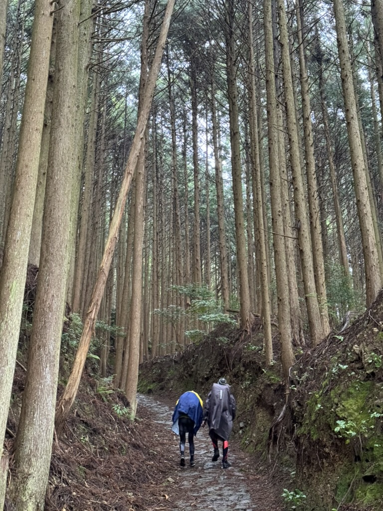
Stage 01
4,0 km · +400 m
Takijiri → Takahara
The entry point. A steep climb through dense forest to the village above the clouds.
Kii Peninsula · Wakayama · 2026 / 05
The Kumano Kodo is not a long-distance trail but a network of old pilgrim paths to three shrines. I walked the Nakahechi route in May, in the rain.
Why this trail
Between Takijiri-oji and Hongu the trail crosses passes barely higher than 700 metres, and still it feels remote. The forests are planted sugi cedars, set close together, and when mist settles between them you cannot see twenty metres ahead.
Along the way you count the oji: small roadside shrines where pilgrims once performed rituals. Today numbered wooden posts stand there, doubling as emergency markers.
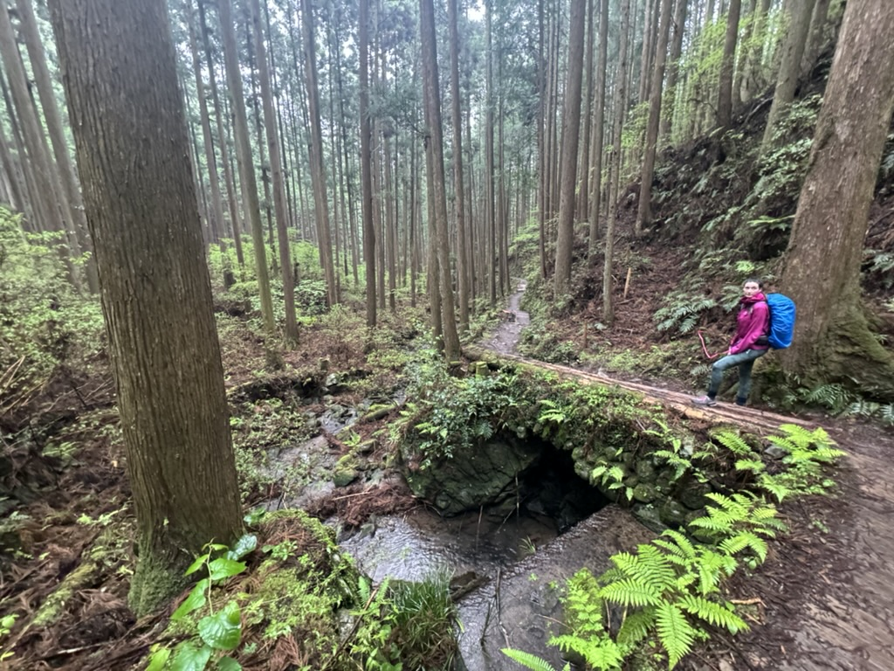
“The rain is part of it. Whoever comes in sunshine sees a different trail.”
Host of the minshuku in Chikatsuyu
Walking times without breaks, measured by the clock rather than estimated.
4 km, 400 metres of climbing in one go. Short, but the steepest section of the route.
2:10 h10 km in steady rain. From midday the path was a streambed; the gaiters made no difference.
4:40 h26 km, the longest stage. At Mikoshi pass the mist broke briefly; after that it was downhill.
9:20 h14 km over the Ogumotori-goe. It ends at Nachi waterfall, 133 metres high.
7:00 hStages

The entry point. A steep climb through dense forest to the village above the clouds.
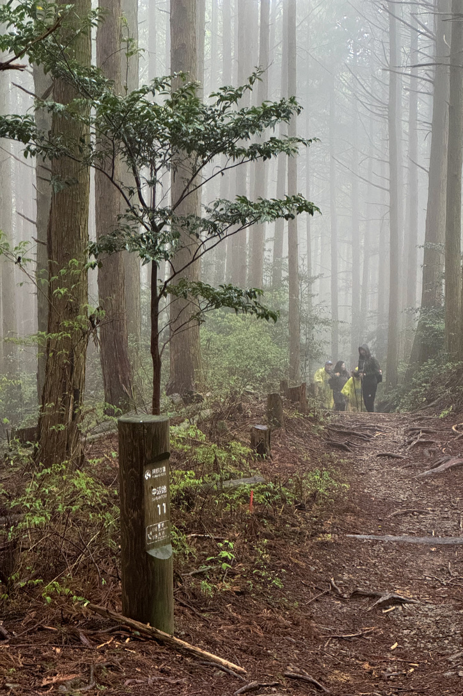
Markers 11 to 34, three passes in between and no mobile reception.
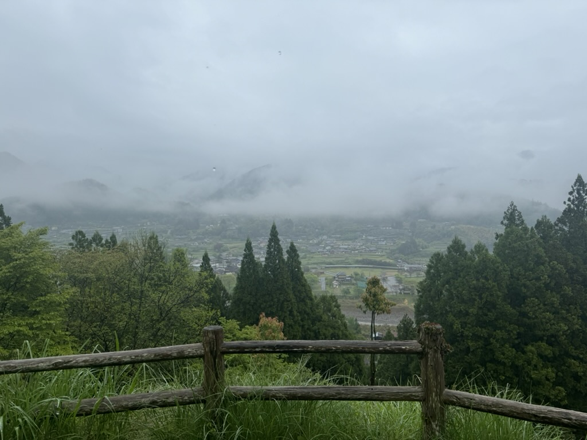
The long stage. To split it, catch the bus at Hosshinmon.
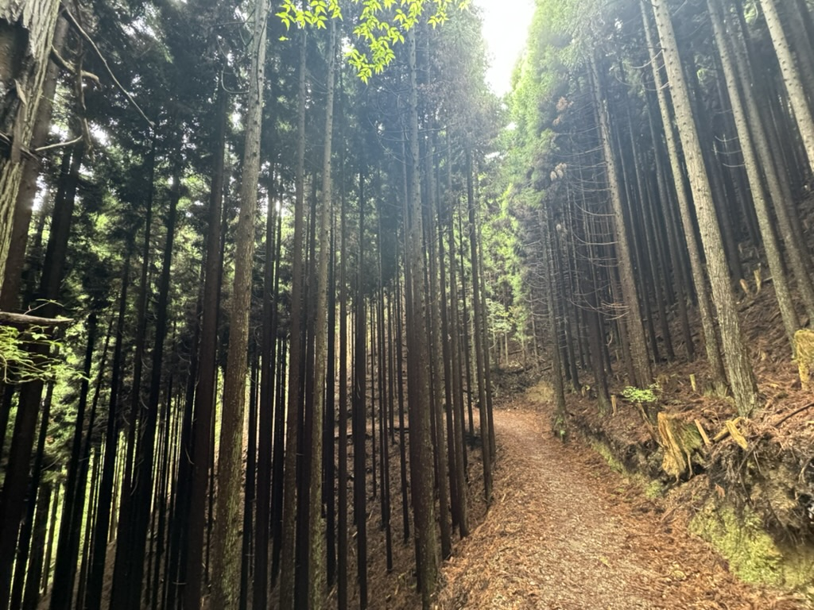
The Ogumotori-goe, locally called the body breaker. It earns the name.
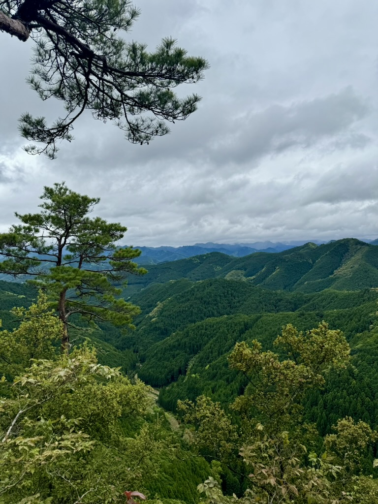
The day-trip version for anyone who only wants a taste.
Trail map
The order of the stations and the day boundaries are accurate, the geometry is not. For navigation you need the tourism office map.
Along the way
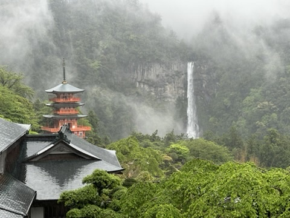
Japan's tallest single-drop waterfall, right beside the Seiganto-ji pagoda. In the morning mist fills the basin.
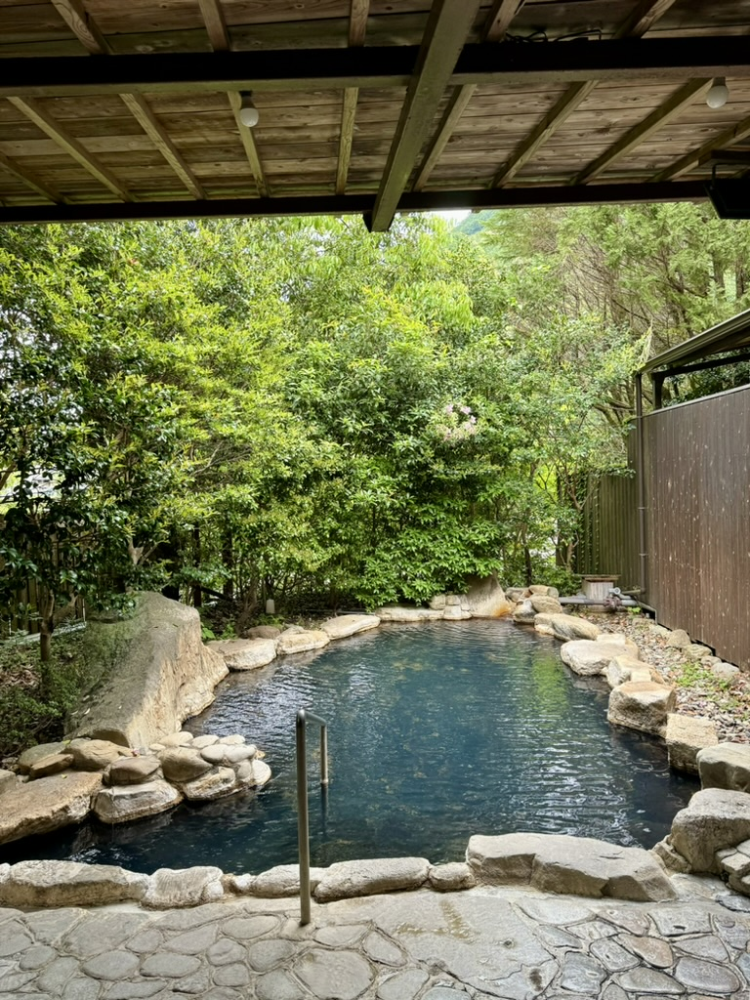
Japan's oldest hot spring, in use since the twelfth century. After day three, the real reason to keep going.
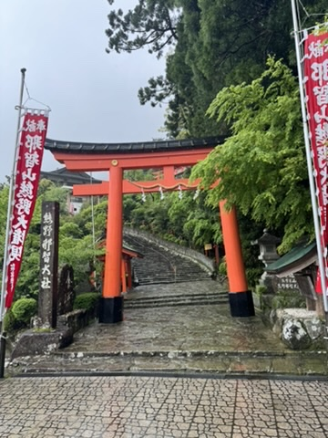
467 steps up from the village. The pilgrimage ends at the top, and next door a vending machine sells cold tea.
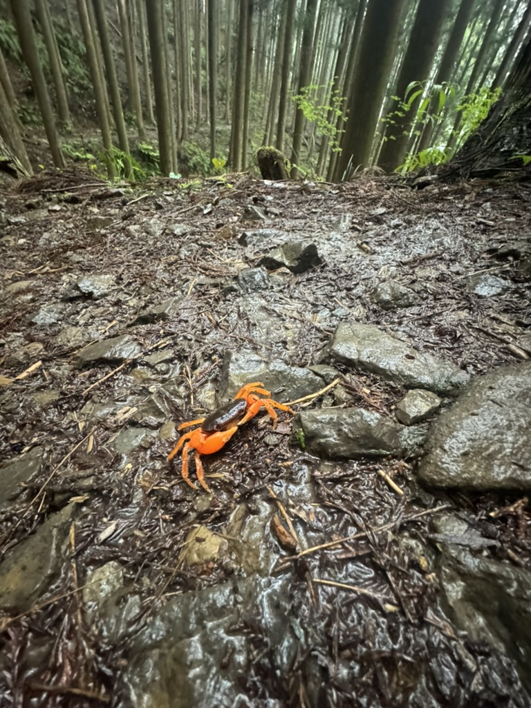
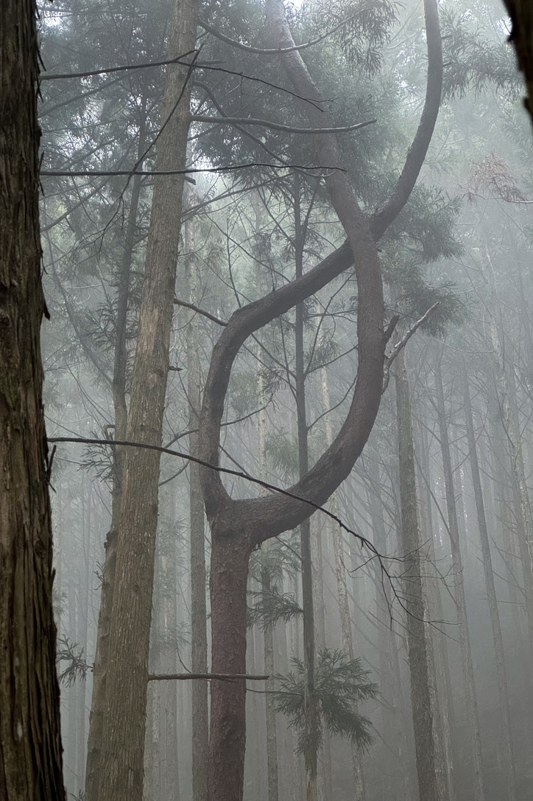
Practical
The four questions I have been asked most often since coming back.
Yes, and early. Takahara and Chikatsuyu each have a handful of minshuku, and in May and November they are full months ahead. The Tanabe tourism office reservation service books in English.
Next up is the Kohechi, the mountain path from Koyasan to Hongu. No marketing, no sharing of your address.